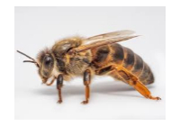
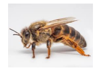

Las abejas y su importancia en el medio ambiente
Las abejas son insectos polinizadores clave para el equilibrio de los ecosistemas y la
agricultura. Su
importancia en el medio ambiente es crítica, ya que desempeñan un papel esencial en la polinización, que es
el
proceso mediante el cual las plantas transfieren polen de una flor a otra para producir frutos y semillas.
Sin
las abejas, muchas especies vegetales no podrían reproducirse de manera eficiente.

 
